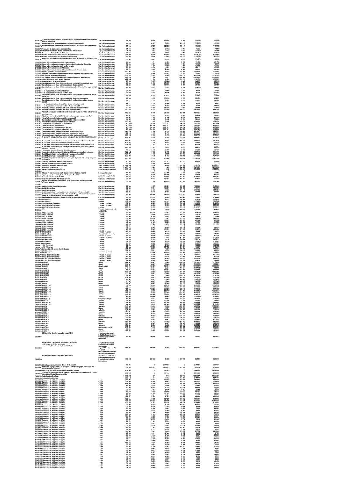

| Tétel | Megjegyzés | Menny. | Egys. | Anyag e.ár (net HUF) | Díj e.ár (net HUF) | Anyag összesen (net HUF) | Díj összesen (net HUF) | Anyag+Díj összesen (net HUF) |
|---|---|---|---|---|---|---|---|---|
| 51-01-376 1-es típusú egyenes zárókövek, profilozott kerettel ellátva | Kiss Ernő utcai homlokzat | 2,0 | db | 28 849 | 469 946 | 57 698 | 939 892 | 1 057 580 |
| 51-01-377 Egyenes zárókövek, profilozott kerettel ellátva | Kiss Ernő utcai homlokzat | 10,0 | db | 23 075 | 173 056 | 230 747 | 1 730 565 | 1 961 312 |
| 51-01-421 1. szint feletti csúcsíves ablakpárkány kő elemei | Hold utcai homlokzat | 67,2 | fm | 4 808 | 42 304 | 323 108 | 2 842 820 | 3 165 928 |
| 51-01-422 2. szint feletti csúcsíves ablakpárkány kő elemei | Hold utcai homlokzat | 19,7 | fm | 4 808 | 42 304 | 94 720 | 833 388 | 928 108 |
| 51-01-454 1. emeleti kőkeretezés fülkeszobrokhoz | 1. emelet | 1,0 | db | 115 373 | 234 407 | 115 373 | 234 407 | 349 780 |
| 51-01-455 1. emeleti kőkeretezés fülkeszobrokhoz | 1. emelet | 2,0 | db | 57 687 | 154 365 | 115 374 | 308 730 | 424 104 |
| 51-01-523 Lépcsőházi kőpárkányok tisztítása vegyszeres úton | Lépcsőház | 1,0 | db | 0 | 2 749 353 | 0 | 2 749 353 | 2 749 353 |
| 51-01-524 Lépcsőházi kőpárkányok tisztítása gőzzel | Lépcsőház | 1,0 | db | 2 142 384 | 41 193 | 2 142 384 | 41 193 | 2 183 577 |
